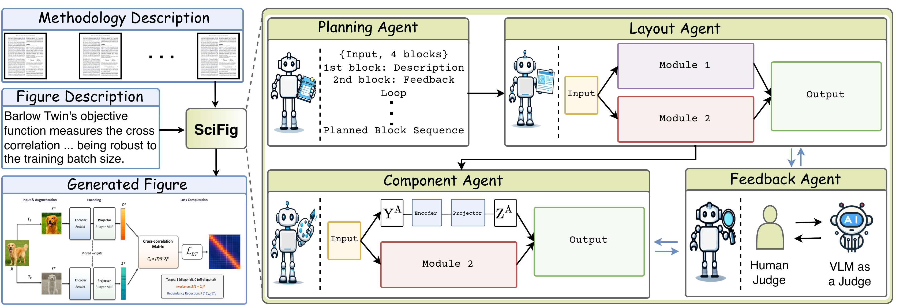
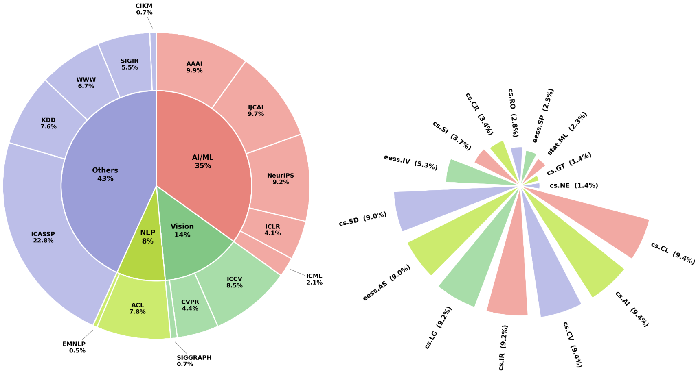
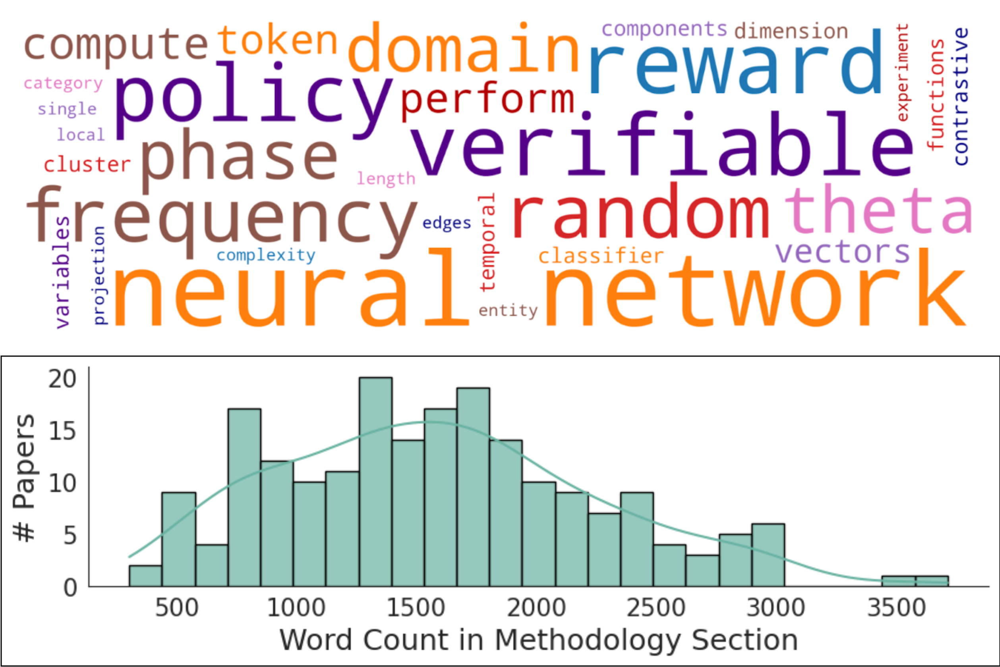

1Johns Hopkins University
2Zhejiang University
3Tsinghua University
4Google 5University of Central Florida
6City University of Hong Kong
7Adobe Research
SciFig generates visually rich, fully editable methodology figures from method text and figure captions.
SciFig-Eval evaluates them against author-drawn references with a rubric-based, deterministic, multi-dimensional protocol.
Running example: Barlow Twins.
TL;DR
We introduce SciFig, a multi-agent framework that generates visually rich, fully editable
methodology figures from scientific text using four cooperating agents — Planning, Layout, Component, and Feedback —
in roughly ten minutes per figure. We additionally contribute SciFig-Bench
(435 human-verified figures, 37 arXiv domains, 15 top-tier venues) and SciFig-Eval,
a four-axis evaluation protocol validated against 60 expert judges at Pearson r = 0.92.
Abstract
Bridging Editability and Visual Quality in Scientific Figure Generation
High-quality methodology figures are central to scientific communication, yet they remain difficult and time-consuming to create. Existing systems face a persistent trade-off: TikZ- or SVG-based methods produce editable structured outputs but lack the richness of human-designed figures, while image-generation models yield polished raster outputs that are difficult to revise. Both directions still struggle to faithfully translate long, unstructured methodology text into figures that preserve fine-grained components, module interactions, and information flow.
We introduce SciFig, an end-to-end multi-agent framework that generates visually rich, fully editable methodology figures from scientific text. SciFig decomposes figure generation into planning, layout synthesis, component rendering, and iterative refinement, producing XML figures editable in standard diagramming tools. We also introduce SciFig-Bench and SciFig-Eval for benchmarking and evaluation. Across seven baselines, SciFig achieves the best performance on all four SciFig-Eval axes and generates figures in roughly ten minutes. Qualitative examples further demonstrate generalization to teaser diagrams and statistical plots.
435
Author-drawn figures in SciFig-Bench
37
arXiv domains covered
15
Top-tier AI/ML venues
4
SciFig-Eval evaluation axes
Contributions
Three Interrelated Contributions
SciFig Framework
An end-to-end multi-agent system for generating visually rich, fully editable methodology figures from scientific text. Four cooperating agents — Planning, Layout, Component, and Feedback — decompose the task to separate structural layout from visual rendering. SciFig supports both human-in-the-loop refinement via direct edits and VLM-in-the-loop refinement via automatic visual critiques, and outperforms all evaluated single-agent and agentic baselines in a human study with 60 participants.
SciFig-Bench Dataset
A human-verified benchmark of 435 author-drawn methodology figures spanning 37 AI/ML-centered arXiv domains across 15 top-tier venues (including AAAI, NeurIPS, IJCAI, ICLR, ICML, CVPR, ICCV, ACL, and EMNLP), alongside a separate rubric development set of 1,784 figures. Each sample includes the methodology section text, figure caption, and human-drawn reference figure.
SciFig-Eval Evaluation Protocol
A decomposed evaluation framework measuring figure quality along four complementary axes: Completeness & Correctness via cross-model VQA (Gemini, GPT, Qwen3-VL); Rubric-Based Content Quality via 20 binary questions grounded in real figures; Perceptual Design Quality via 8 deterministic heuristics requiring no VLM; and Reference-Based Fidelity via visual, cross-modal, and textual comparison. Validated at Pearson r = 0.92 (p < 0.001) against 60 expert judges.
Method
Four Cooperating Agents
SciFig decomposes figure generation into four sequential stages, each handled by a dedicated agent. Given methodology text and a figure caption, the system outputs an editable XML file — renderable in PowerPoint, Keynote, Illustrator, or diagrams.net — encoding the figure's blocks, spatial layout, and visual components. The Feedback Agent forms iterative refinement loops with both the Layout and Component agents, supporting human-in-the-loop and VLM-in-the-loop revision modes.

SciFig's four-agent pipeline. The Planning Agent extracts structured pipeline blocks from the methodology text. The Layout Agent converts this plan into editable XML. The Component Agent renders visual elements for each block. The Feedback Agent refines the figure using human or VLM critiques. Running example: Barlow Twins. This figure was itself generated by SciFig.
SciFig-Bench
A Broad, Human-Verified Benchmark
SciFig-Bench covers the breadth of modern AI/ML research with 435 methodology figures from papers at major venues spanning computer vision, NLP, robotics, theory, and beyond. A rigorous three-stage filtering pipeline — section identification, quality checks, and text–figure consistency verification by two frontier VLMs — ensures every sample is clean, high-quality, and correctly paired.

Venue and arXiv category distribution. AI/ML (35%), NLP (14%), and Vision (8%) are the dominant areas, with broad coverage across AAAI, NeurIPS, IJCAI, ICLR, ICML, CVPR, ICCV, ACL, and others.

Methodology text statistics. Word counts range from ~400 to 3,500+, peaking at 1,500–2,000 words — long, unstructured prose that challenges existing generation systems.
Qualitative Results
Beyond Methodology Figures
Although SciFig is benchmarked on methodology figures, qualitative examples show it generalizes to teaser diagrams and statistical plots. All outputs are fully editable XML — no full regeneration is required for revisions. Figures below were generated from paper text without access to the original authors' source files.
Representative generated figures. Left: methodology diagrams for arXiv papers 2302.09785v1 and 2310.04755v3. Right: teaser figure (2301.01919v2) and statistical bar plot (2303.10816v1). All outputs are fully editable.
Citation
BibTeX
If you find SciFig useful in your research, please consider citing our work.
@inproceedings{huang2026scifig,title= {SciFig: Towards Automating Editable Figure Generation
for Scientific Papers},author= {Huang, Siyuan and Zhou, Yifan and Gao, Yutong and
Yin, Zi and Bai, Juyang and Liu, Xinxin and
Chellappa, Rama and Lau, Chun Pong and Peng, Cheng and
Nag, Sayan and Pramanick, Shraman},year= {2026}}